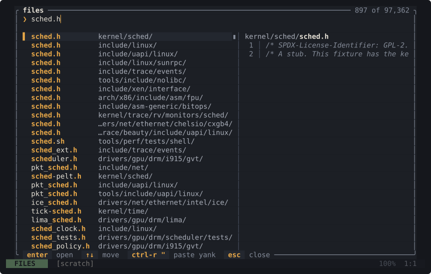
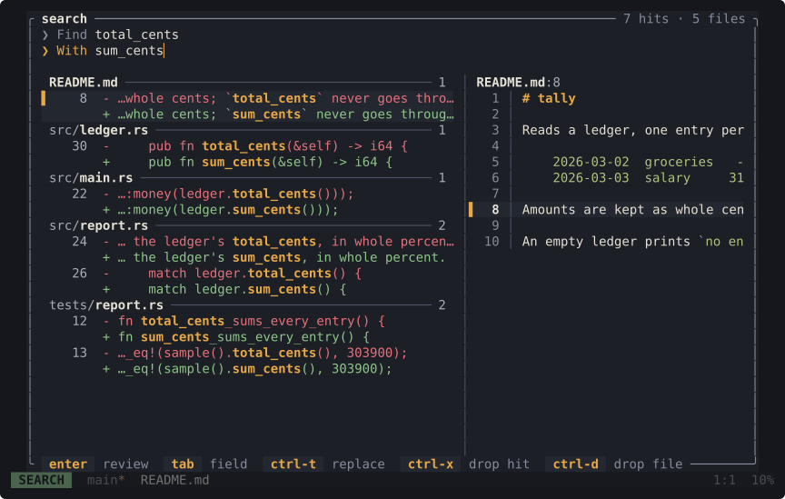
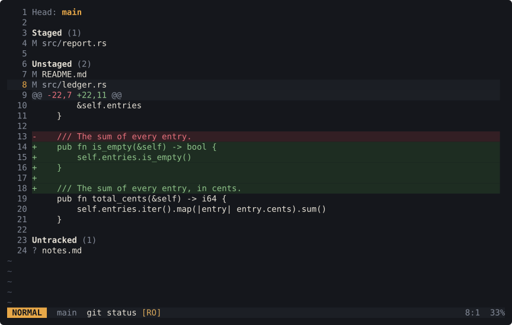

Vim's keys. Nothing to configure.
strop is a modal text editor for the terminal. It uses Vim's commands as they are, and it comes with what you would otherwise add yourself: a file finder, project search and replace, git, language servers, a terminal and editing over SSH. It is one static binary. There are no plugins and nothing to set up.
$ curl -fsSL https://strop.dev/install.sh | shLinux and WSL, x86_64the only build; details
v0.63.0 released 2026-11-12 alpha MIT

sched.h, in a tree with the Linux kernel's 97,362 file paths. The fixture has the kernel's paths, not its sources: each file is a two-line stub, which is what the preview shows.
total_cents to sum_cents. Every hit is listed under its file as a - row and a + row while you type; nothing has changed on disk yet.
Each frame is the screen of strop 0.63.0, 100 by 30 cells, captured from the binary and converted to SVG. Nothing is drawn by hand.
What it does
- Find a file Space f Type part of the name. The files you use most in the project come first.
- Search the project Space / Results update as you type, grouped by file. Smart case, with one key each for regex and whole word.
- Replace Space R Every hit is shown as a removed line and an added line while you type. Enter shows the review, Enter again applies it, and u undoes it in the files too.
-
Edit the hits
Ctrl-O
In search results, references or diagnostics, this collects the hits into one buffer. Edit them there with any command;
:wwrites every file you changed. - Git Space g g Stage, unstage and commit from one status buffer. Branches, blame, log and file history are under Space g as well.
-
Language servers
gd
Definition, references, rename, diagnostics, completion and formatting, from the servers already on your
PATH. Syntax highlighting for 26 languages is in the binary. - Terminal Space t A shell in a split. Its output is a buffer, so you move, search and yank in it like any other.
-
SSH
Space o
Open and edit files on another machine over plain OpenSSH, or start with
strop ssh://host/path. Nothing is installed on the host.
The finder, search, buffers and symbols are one kind of list with one set of keys, and whatever you open from them is an ordinary buffer. Space ? lists every key.
- Coming from Neovim?What works the same, what differs, and what is missing.
- First ten minutesInstall it, open a project and go through the loop once.
- How it's builtThe code that moves cursors and marks through an edit is proved in Lean, and the keys are tested against Neovim itself before every release.
Install
Install or reinstall
curl -fsSL https://strop.dev/install.sh | shThe script downloads the release tarball, checks its SHA-256 and puts strop on your PATH. Read it first if you like, or take the tarball and its .sha256 from the release page.
Update
strop updatestrop update --check only looks. Nothing else is downloaded, ever: grammars and palettes are in the binary.
Platforms
Linux and WSL on x86_64 (x86_64-unknown-linux-musl). On Windows, run it inside WSL.
There is no macOS, ARM or native Windows build, and none is scheduled. The old macOS, aarch64, crates.io and Homebrew packages are not updated.
strop is alpha. It changes with every release; the changelog says how.
Palettes
This site uses the editor's six palettes, with the colour values the binary ships. Pick one to see it here; :theme picks it in the editor.
The choice stays in this browser. Press the applied palette again to go back to your system's light or dark preference.